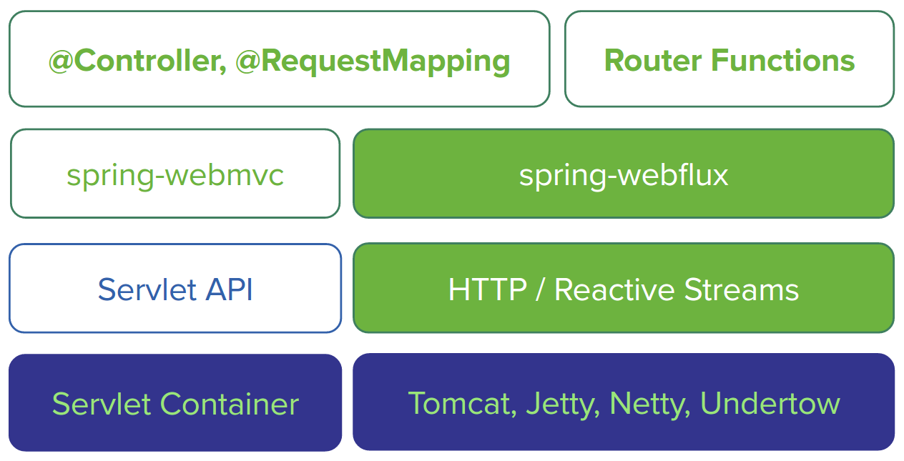

Create a WebFlux application from Scratch¶
A working example is worth a thousand words. Let's write code and explore the reactive programming features introduced in Spring Framework 7.
As an example, I will reuse the same concept in my former Spring Boot sample codes which is a simple blog application.
In this post, we prepare the codes manually and do not use Spring Boot autoconfiguration. I think it will help you to understand the essential configuration in a Spring WebFlux application.
In the following steps we will start with creating RESTful APIs for Post.
Prerequisites¶
Before writing some real codes, make sure you have installed the essential software:
- Java 21 (or Java 17 LTS). Install a JDK from Temurin/Adoptium, Oracle, or your preferred vendor: https://adoptium.net/.
- Apache Maven or Gradle
- Your favorite IDE, including :
- NetBeans IDE
- Eclipse IDE (or base on Eclipse, eg. Spring Tool Suite is highly recommended)
- IntelliJ IDEA Community Edition or Ultimate Edition
- VSCode with Java feature pack and Spring feature pack
- etc
NOTE: Do not forget to add path which includes
javaandmvncommand into your system environment variable PATH .
Generate project skeleton¶
Personally I prefer to use Apache Maven to build Java applications.
Run the following command to create a general web application from the existing Maven archetype.
$ mvn archetype:generate -DgroupId=com.example \
-DartifactId=demo \
-DarchetypeArtifactId=maven-archetype-webapp \
-DinteractiveMode=false \
NOTE: I would like Unix like bash to run commands in my terminal. Under Windows system, you can choose CygWin or convert it to Windows form.
Import the generated codes into your IDE..
Open pom.xml in your IDE editor, add some modifications:
- Add
spring-boot-starter-parentas parent POM to manage the versions of all required dependencies for this project. - Add
spring-webflux,jackson-databind,reactor-coreas dependencies to get Spring Web Reactive support - Add
logbackas logging framework,jcl-over-slf4jis a bridge for Spring jcl and slf4j. - Add Lombok to erase the tedious getters, setters, etc for POJO classes. More details go to Lombok project.
The final pom.xml looks like:
<?xml version="1.0" encoding="UTF-8"?>
<project xmlns="http://maven.apache.org/POM/4.0.0" xmlns:xsi="http://www.w3.org/2001/XMLSchema-instance"
xsi:schemaLocation="http://maven.apache.org/POM/4.0.0 http://maven.apache.org/xsd/maven-4.0.0.xsd">
<modelVersion>4.0.0</modelVersion>
<groupId>com.example</groupId>
<artifactId>spring-reactive-sample-vanilla</artifactId>
<version>0.0.1-SNAPSHOT</version>
<packaging>jar</packaging>
<name>spring-reactive-sample-vanilla</name>
<description>Spring Webflux demo(without Spring Boot)</description>
<parent>
<groupId>org.springframework.boot</groupId>
<artifactId>spring-boot-starter-parent</artifactId>
<version>4.0.0</version>
<relativePath/> <!-- lookup parent from repository -->
</parent>
<properties>
<project.build.sourceEncoding>UTF-8</project.build.sourceEncoding>
<project.reporting.outputEncoding>UTF-8</project.reporting.outputEncoding>
<java.version>21</java.version>
</properties>
<dependencies>
<dependency>
<groupId>org.springframework</groupId>
<artifactId>spring-context</artifactId>
</dependency>
<dependency>
<groupId>org.springframework</groupId>
<artifactId>spring-webflux</artifactId>
</dependency>
<dependency>
<groupId>com.fasterxml.jackson.core</groupId>
<artifactId>jackson-databind</artifactId>
</dependency>
<dependency>
<groupId>io.netty</groupId>
<artifactId>netty-buffer</artifactId>
</dependency>
<dependency>
<groupId>io.projectreactor.netty</groupId>
<artifactId>reactor-core</artifactId>
</dependency>
<dependency>
<groupId>org.projectlombok</groupId>
<artifactId>lombok</artifactId>
</dependency>
<dependency>
<groupId>org.slf4j</groupId>
<artifactId>slf4j-api</artifactId>
</dependency>
<dependency>
<groupId>org.slf4j</groupId>
<artifactId>jcl-over-slf4j</artifactId>
</dependency>
<dependency>
<groupId>ch.qos.logback</groupId>
<artifactId>logback-core</artifactId>
</dependency>
<dependency>
<groupId>ch.qos.logback</groupId>
<artifactId>logback-classic</artifactId>
</dependency>
</dependencies>
</project>
Getting started¶
The project skeleton is ready, now let's add some codes to play reactive programming.
Create a new class named Post, it includes three fields: id, title, content.
@Data
@ToString
@Builder
@NoArgsConstructor
@AllArgsConstructor
class Post {
private Long id;
private String title;
private String content;
}
In the above codes, @Data, @ToString, @Builder, @NoArgsConstructor, @AllArgsConstructor are from the Lombok project.
When you compile Post, it will utilize Java compiler built-in Annotation Processing Tooling feature to add extra facilities into the final compiled classes, including:
- Getters and setters of the three fields, and overrides
equalsandhashCodemethods. - Overrides
toStringmethod. - A builder class for creating the Post instance more easily.
- A constructor with no arguments.
- A constructor with all fields as arguments.
Create a dummy repository named PostRepository to retrieve posts from and save them back to a repository.
@Component
class PostRepository {
private static final Map<Long, Post> DATA = new HashMap<>();
private static long ID_COUNTER = 1L;
static {
Arrays.asList("First Post", "Second Post")
.stream()
.forEach((java.lang.String title) -> {
long id = ID_COUNTER++;
DATA.put(Long.valueOf(id), Post.builder().id(id).title(title).content("content of " + title).build());
}
);
}
Flux<Post> findAll() {
return Flux.fromIterable(DATA.values());
}
Mono<Post> findById(Long id) {
return Mono.just(DATA.get(id));
}
Mono<Post> createPost(Post post) {
long id = ID_COUNTER++;
post.setId(id);
DATA.put(id, post);
return Mono.just(post);
}
}
Currently we have not connect to any database, here we use a Map backed data store instead. When we come to discuss the reactive features provided by Spring Data projects, we will replace it with a real Spring Data reactive implementation.
If you have used Spring Data before, you will find these APIs are every similiar with Repository interface provided in Spring Data.
The main difference is in the current Repository class all methods return a Flux or Mono.
Flux and Mono are from Reactor, which powers the reactive support in Spring Framework 7 by default.
Fluxrepresents a stream of 0..N elements.-
Monorepresents an asynchronous 0..1 result. -
Fluxmeans it could return lots of results in a stream. Monomeans it could return 0 to 1 result.
Create a controller class named PostController to expose RESTful PAIs for Post entity.
@RestController
@RequestMapping(value = "/posts")
class PostController {
private final PostRepository posts;
public PostController(PostRepository posts) {
this.posts = posts;
}
@GetMapping(value = "")
public Flux<Post> all() {
return this.posts.findAll();
}
@GetMapping(value = "/{id}")
public Mono<Post> get(@PathVariable(value = "id") Long id) {
return this.posts.findById(id);
}
@PostMapping(value = "")
public Mono<Post> create(Post post) {
return this.posts.createPost(post);
}
}
If you have some experience in Spring WebMvc, you will see the above codes are almost same as the existing one, except we return a Flux or Mono as the response body.
Next, let's create a @Configuration class, add an @EnableWebFlux annotation to activiate webflux support in this application.
Now we almost have done the programming work, let's try to bootstrap the application.
Bootstrap¶
According to the official documentation (see the Web on Reactive Stack section), Spring Framework 7 provides several options to bootstrap a reactive web application: https://docs.spring.io/spring-framework/docs/current/reference/html/web-reactive.html#spring-webflux
Spring WebFlux is supported on Tomcat, Jetty, Servlet 3.1+ containers, as well as on non-Servlet runtimes such as Netty and Undertow.

Apache Tomcat¶
Create a general-purpose Application class to start the application manually.
@Configuration
@ComponentScan
@PropertySource(value = "classpath:application.properties", ignoreResourceNotFound = true)
public class Application {
@Value("${server.port:8080}")
private int port = 8080;
public static void main(String[] args) throws Exception {
ApplicationContext context = new AnnotationConfigApplicationContext(Application.class); // (1)
Tomcat tomcatServer = context.getBean(Tomcat.class);
tomcatServer.start();
System.out.println("Tomcat server is running at port:"
+ tomcatServer.getConnector().getLocalPort());
//System.in.read();
}
@Bean
@Profile("default")
public Tomcat embeddedTomcatServer(ApplicationContext context) {
HttpHandler handler = WebHttpHandlerBuilder.applicationContext(context).build();
Servlet servlet = new TomcatHttpHandlerAdapter(handler);
Tomcat tomcat = new Tomcat();
File base = new File(System.getProperty("java.io.tmpdir"));
Context rootContext = tomcat.addContext("", base.getAbsolutePath());
Tomcat.addServlet(rootContext, "main", servlet).setAsyncSupported(true);
rootContext.addServletMappingDecoded("/", "main");
tomcat.setHostname("localhost");
tomcat.setPort(this.port);
tomcat.setBaseDir(System.getProperty("java.io.tmpdir"));
return tomcat;
}
}
The above codes perform some tasks.
- Create a
HttpHandlerfromApplicationContext. - Use
TomcatHttpHandlerAdapterto bridge the Servlet APIs to the reactive basedHttpHandler. - Start tomcat server.
Do not forget add the tomcat-embed-core to project dependencies.
<dependency>
<groupId>org.apache.tomcat.embed</groupId>
<artifactId>tomcat-embed-core</artifactId>
</dependency>
You can simply run this class in IDEs as java applications.
If you want to package all dependencies into one jar and run the application in command line, eg. java -jar filename, maven-assembly-plugin can help this purpose.
Add maven-assembly-plugin configuration into the pom.xml file.
<!-- Maven Assembly Plugin -->
<plugin>
<groupId>org.apache.maven.plugins</groupId>
<artifactId>maven-assembly-plugin</artifactId>
<configuration>
<descriptorRefs>
<descriptorRef>jar-with-dependencies</descriptorRef>
</descriptorRefs>
<!-- MainClass in mainfest make a executable jar -->
<archive>
<manifest>
<mainClass>com.example.demo.Application</mainClass>
</manifest>
</archive>
</configuration>
<executions>
<execution>
<id>make-assembly</id>
<phase>package</phase> <!-- bind to the packaging phase -->
<goals>
<goal>single</goal>
</goals>
</execution>
</executions>
</plugin>
Open your terminal, run the following command in your project root folder:
When it is done, switch to the target folder, besides the general jar, you will find an extra fat jar was generated, which filename is ended with jar-with-dependencies.jar.
spring-reactive-sample-vanilla-0.0.1-SNAPSHOT-jar-with-dependencies.jar
spring-reactive-sample-vanilla-0.0.1-SNAPSHOT.jar
Run the following command to run this application.
When it is started, let's try to verify if it works.
#curl http://localhost:8080/posts
[{"id":1,"title":"First Post","content":"content of First Post"},{"id":2,"title":"Second Post","content":"content of Second Post"}]
For the complete codes, check spring-reactive-sample/vanilla-tomcat.
Eclipse Jetty¶
To use a Jetty server instead, replace the Application class with the following:
@Configuration
@ComponentScan
@PropertySource(value = "classpath:application.properties", ignoreResourceNotFound = true)
public class Application {
@Value("${server.port:8080}")
private int port = 8080;
public static void main(String[] args) throws Exception {
ApplicationContext context = new AnnotationConfigApplicationContext(Application.class); // (1)
Server server = context.getBean(Server.class);
server.start();
server.join();
System.out.println("Press ENTER to exit.");
System.in.read();
}
@Bean
public Server jettyServer(ApplicationContext context) throws Exception {
HttpHandler handler = WebHttpHandlerBuilder.applicationContext(context).build();
Servlet servlet = new JettyHttpHandlerAdapter(handler);
Server server = new Server();
ServletContextHandler contextHandler = new ServletContextHandler(server, "");
contextHandler.addServlet(new ServletHolder(servlet), "/");
contextHandler.start();
ServerConnector connector = new ServerConnector(server);
connector.setHost("localhost");
connector.setPort(port);
server.addConnector(connector);
return server;
}
}
Replace tomcat-embed-core with the following jetty related dependencies.
<dependency>
<groupId>org.eclipse.jetty</groupId>
<artifactId>jetty-server</artifactId>
</dependency>
<dependency>
<groupId>org.eclipse.jetty</groupId>
<artifactId>jetty-servlet</artifactId>
</dependency>
Similarly, you can run the application directly in your IDEs.
For the complete codes, check spring-reactive-sample/vanilla-jetty.
Alternatively, you can run the application in Reactor Netty, or JBoss Undertow.
Reactor Netty¶
For Reactor Netty, replace the Application class with:
@Configuration
@ComponentScan
@PropertySource(value = "classpath:application.properties", ignoreResourceNotFound = true)
public class Application {
@Value("${server.port:8080}")
private int port = 8080;
public static void main(String[] args) throws Exception {
try (AnnotationConfigApplicationContext context = new AnnotationConfigApplicationContext(
Application.class)) {
context.getBean(HttpServer.class)
.bindUntilJavaShutdown(Duration.ofSeconds(60), null);
}
}
@Bean
public HttpServer httpServer(ApplicationContext context) {
HttpHandler handler = WebHttpHandlerBuilder.applicationContext(context).build();
ReactorHttpHandlerAdapter adapter = new ReactorHttpHandlerAdapter(handler);
return HttpServer.create()
.host("localhost")
.port(this.port)
.handle(adapter);
}
}
And add reactor-netty in your project dependencies.
<dependency>
<groupId>io.projectreactor.netty</groupId>
<artifactId>reactor-netty</artifactId>
</dependency>
For the complete codes, check spring-reactive-sample/vanilla.
Undertow (deprecated)¶
For Undertow, replace the Application class with:
@Configuration
@ComponentScan
@PropertySource(value = "classpath:application.properties", ignoreResourceNotFound = true)
public class Application {
@Value("${server.port:8080}")
private int port = 8080;
public static void main(String[] args) throws Exception {
ApplicationContext context = new AnnotationConfigApplicationContext(Application.class); // (1)
Undertow server = context.getBean(Undertow.class);
server.start();
System.out.println("Press ENTER to exit.");
System.in.read();
}
@Bean
public Undertow undertowServer(ApplicationContext context) {
HttpHandler handler = WebHttpHandlerBuilder.applicationContext(context).build(); // (2)
// Undertow
UndertowHttpHandlerAdapter undertowAdapter = new UndertowHttpHandlerAdapter(handler);
Undertow server = Undertow.builder()
.addHttpListener(port, "localhost")
.setHandler(undertowAdapter)
.build();
return server;
}
}
And add undertow-core in your project dependencies.
Check the sample codes: spring-reactive-sample/vanilla-undertow.
Standalone Servlet Container¶
If you prefer traditional web applications and want to package a WAR to deploy into a servlet container, Spring Framework 7 provides AbstractReactiveWebInitializer to help initialize a reactive web application in a Servlet environment. This class implements ApplicationInitializer and is discovered by the servlet container at startup.
Create a AppInitializer instead of the Application class.
public class AppInitializer extends AbstractReactiveWebInitializer {
@Override
protected Class<?>[] getConfigClasses() {
return new Class[]{
WebConfig.class,
SecurityConfig.class
};
}
}
The former
AbstractAnnotationConfigDispatcherHandlerInitializeris problematic, check notes I added in the sample codes spring-reactive-sample/war
Next change the project packaging from jar to war in pom.xml.
And add servlet-api to your project dependencies.
<dependency>
<groupId>javax.servlet</groupId>
<artifactId>javax.servlet-api</artifactId>
<scope>provided</scope>
</dependency>
Now you can run this application on a IDE managed Servlet 3.1 Container directly.
Or package the project into a war format and deploy it into a servlet 3.1 based container(tomcat, jetty) manually.
Alternatively, if you want to run this application via mvn command in the development stage. cargo-maven2-plugin can archive this purpose.
<plugin>
<groupId>org.apache.maven.plugins</groupId>
<artifactId>maven-war-plugin</artifactId>
<configuration>
<failOnMissingWebXml>false</failOnMissingWebXml>
</configuration>
</plugin>
<plugin>
<groupId>org.codehaus.cargo</groupId>
<artifactId>cargo-maven2-plugin</artifactId>
<configuration>
<container>
<containerId>tomcat9x</containerId>
<type>embedded</type>
</container>
<configuration>
<properties>
<cargo.servlet.port>9000</cargo.servlet.port>
<cargo.logging>high</cargo.logging>
</properties>
</configuration>
</configuration>
</plugin>
Run the following command to package and deploy it into an embedded tomcat controlled by cargo.
Check the sample codes: spring-reactive-sample/war.
Alternative Bean Registration¶
In the example above we use ApplicationContext component scanning. For classes that are not part of the component scan, Spring Framework 7 provides a concise registerBean API to programmatically register instances as Spring beans in the ApplicationContext.
public class Application {
public static void main(String[] args) throws Exception {
AnnotationConfigApplicationContext context = new AnnotationConfigApplicationContext();
PostRepository posts = new PostRepository();
PostHandler postHandler = new PostHandler(posts);
Routes routesBean = new Routes(postHandler);
context.registerBean(PostRepository.class, () -> posts);
context.registerBean(PostHandler.class, () -> postHandler);
context.registerBean(Routes.class, () -> routesBean);
context.registerBean(WebHandler.class, () -> RouterFunctions.toWebHandler(routesBean.routes(), HandlerStrategies.builder().build()));
context.refresh();
nettyServer(context).onDispose().block();
}
public static DisposableServer nettyServer(ApplicationContext context) {
HttpHandler handler = WebHttpHandlerBuilder.applicationContext(context).build();
ReactorHttpHandlerAdapter adapter = new ReactorHttpHandlerAdapter(handler);
HttpServer httpServer = HttpServer.create().host("localhost").port(8080);
return httpServer.handle(adapter).bindNow();
}
}
For the complete codes, check spring-reactive-sample/register-bean.